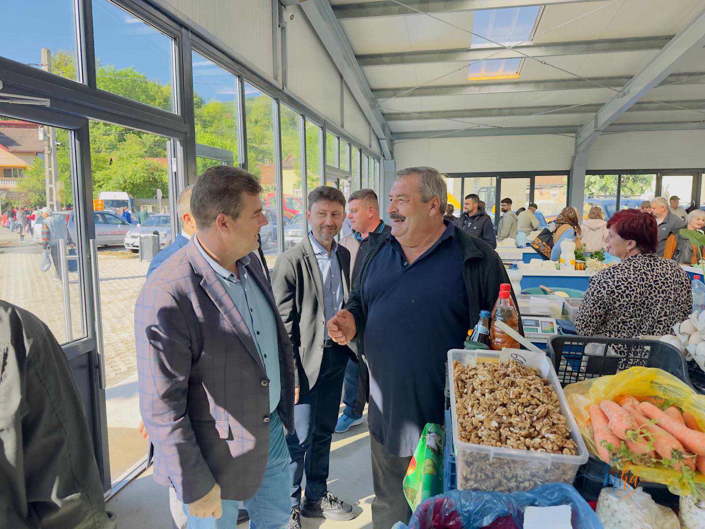
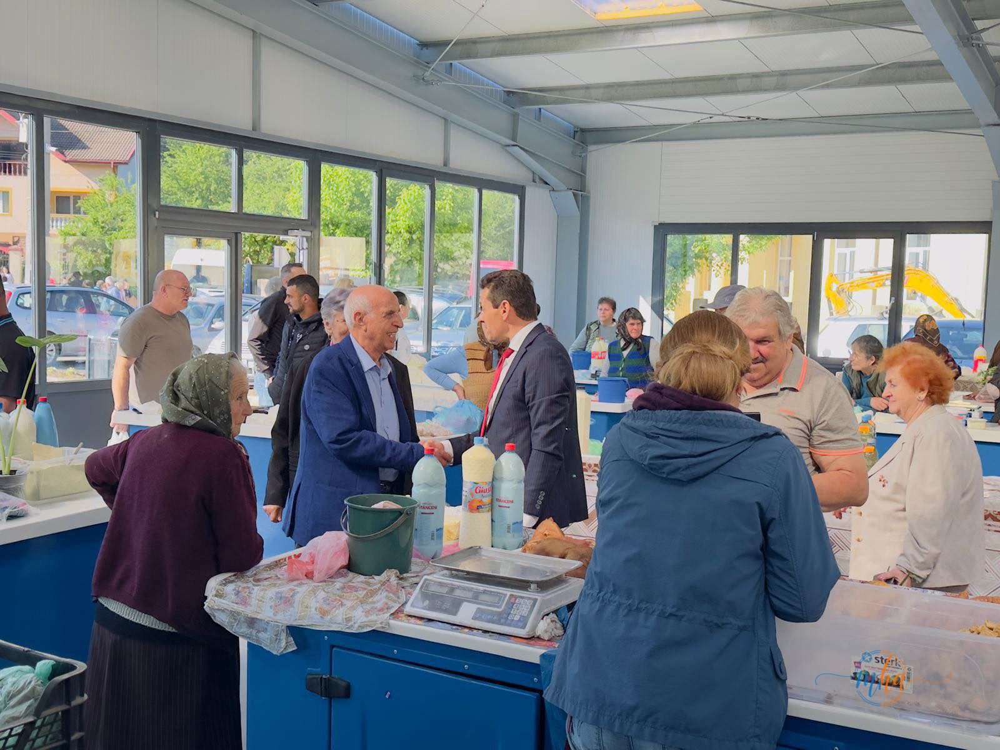
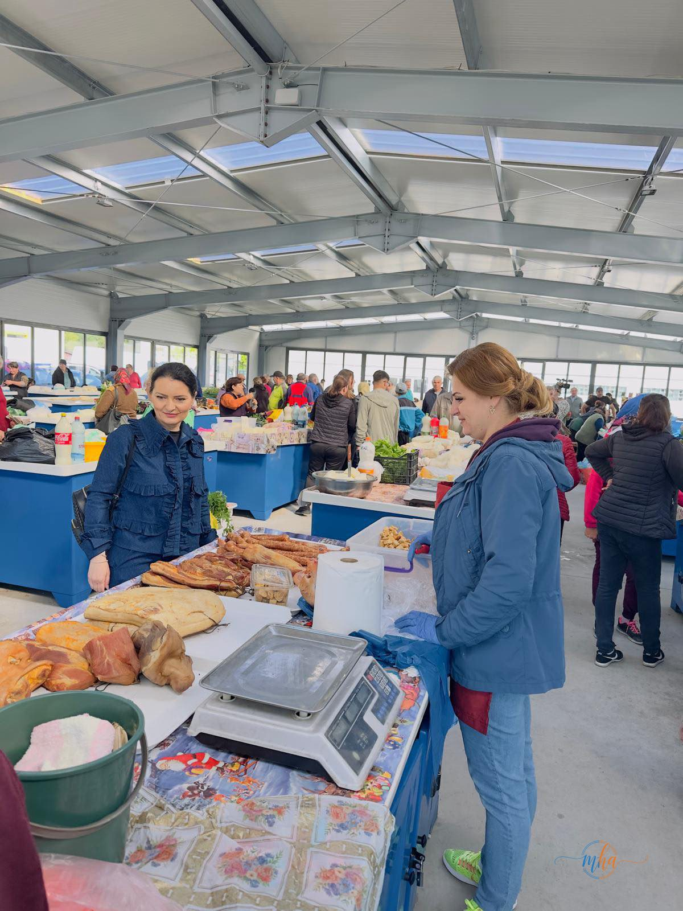
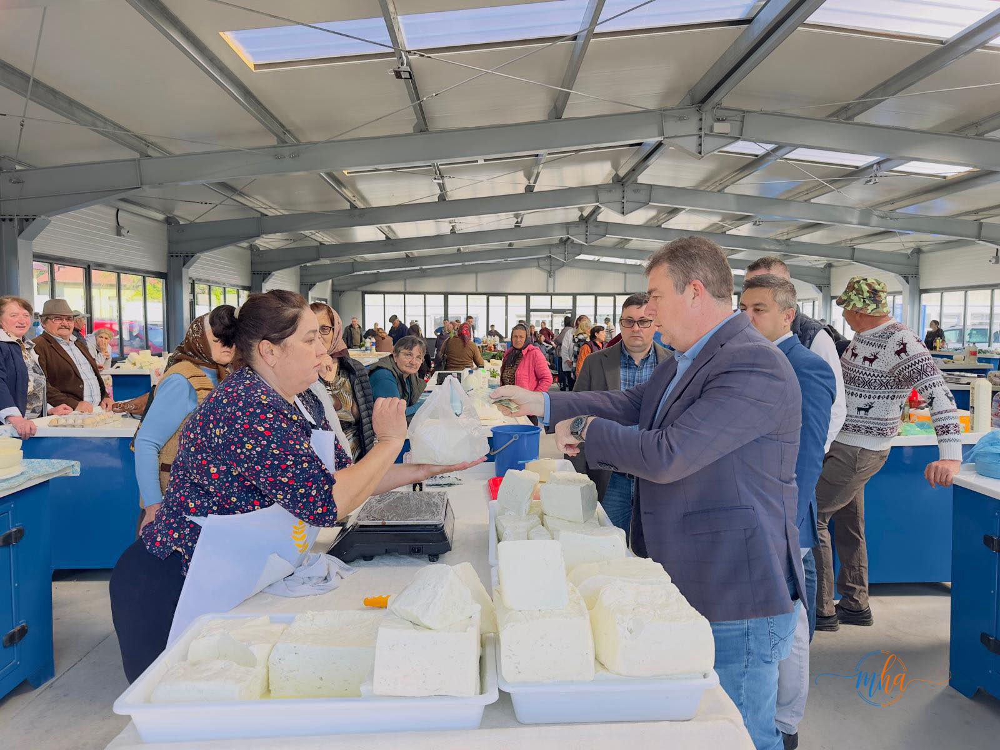
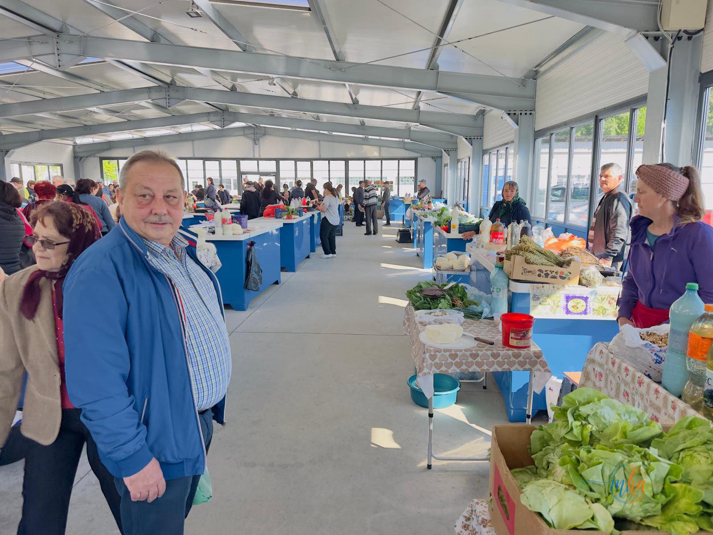

Locuitorii din Baia de Aramă beneficiază, începând de acum, de o piață agroalimentară modernă, realizată printr-un parteneriat între Consiliul Județean Mehedinți și Primăria orașului Baia de Aramă. Obiectivul reprezintă o investiție importantă pentru dezvoltarea zonei de nord a județului și pentru sprijinirea producătorilor locali, care aveau nevoie de un spațiu adecvat și modern pentru a-și valorifica produsele.
Noua piață vine să răspundă unei nevoi reale a comunității: un spațiu organizat, sigur și modern, unde atât comercianții, cât și cumpărătorii să se simtă bine. Fie că vine vorba de brânzeturi proaspete, legume de sezon sau produse tradiționale, locuitorii din Baia de Aramă și din localitățile din jur au acum o destinație modernă pentru aprovizionarea zilnică.
🏗️ Piața Agroalimentară Baia de Aramă — Date investiție
| Localitate | Baia de Aramă, Mehedinți |
| Tip obiectiv | Piață agroalimentară modernă |
| Finanțare | Parteneriat CJ Mehedinți + Primărie |
| Primar | Ionuț Tudorescu |
| Dotări | Tarabe moderne, utilități, parcări |
| Beneficiari | Producători locali și cetățeni |
Condiții moderne pentru comercianți și cumpărători
Cu ocazia vizitei efectuate la noua piață agroalimentară, oficialii județului au subliniat importanța investiției pentru comunitate. Spațiul este dotat cu tarabe moderne, utilități complete și facilități necesare desfășurării activităților comerciale în condiții optime, contribuind la creșterea calității serviciilor oferite în piață.
Standardele ridicate ale noii construcții asigură condiții igienice corespunzătoare, iluminat natural prin suprafețe mari vitrate și o circulație facilă atât pentru vânzători, cât și pentru cumpărători. Tarabele sunt dotate cu dotări moderne care respectă normele sanitare în vigoare.

Reprezentanți ai CJ Mehedinți în dialog cu comercianții la noua piață | Foto: MehedintiAzi.ro

Oficiali în dialog cu producătorii locali la noua piață | Foto: MehedintiAzi.ro
Sprijin direct pentru producătorii locali din nordul Mehedinților
Noua investiție vine în sprijinul producătorilor locali, care vor avea posibilitatea să își valorifice produsele într-un spațiu bine organizat, adaptat cerințelor actuale. Fermierii și micii producători din Baia de Aramă și localitățile învecinate au acum la dispoziție un cadru propice pentru a comercializa produse proaspete, tradiționale și de calitate.
Totodată, cetățenii din Baia de Aramă și din localitățile învecinate vor beneficia de un mediu modern și accesibil pentru aprovizionare, cu produse locale direct de la producător. Legătura directă dintre producători și consumatori, fără intermediari, contribuie atât la prețuri mai bune, cât și la susținerea economiei locale.

Interior piața agroalimentară Baia de Aramă — produse tradiționale locale direct de la producători | Foto: MehedintiAzi.ro
Parcare modernă și acces facil — plus de confort pentru toți
Pe lângă amenajarea pieței agroalimentare, proiectul a inclus și modernizarea zonei adiacente, unde au fost realizate locuri de parcare destinate atât cumpărătorilor, cât și comercianților. Aceste lucrări contribuie la fluidizarea accesului și la creșterea confortului pentru toate persoanele care tranzitează zona.
Infrastructura rutieră și de parcare din jurul pieței a fost reamenajată cu pavaj nou, asigurând o circulație facilă și o imagine urbană îngrijită în centrul orașului Baia de Aramă.

Brânzeturi tradiționale — producători locali la noua piață din Baia de Aramă | Foto: MehedintiAzi.ro

Tarabe moderne și spațiu amplu în noua piață agroalimentară | Foto: MehedintiAzi.ro
Felicitări pentru primar și angajament pentru noi investiții
În cadrul vizitei, au fost transmise felicitări primarului Ionuț Tudorescu pentru implementarea acestui proiect, considerat esențial pentru dezvoltarea comunității locale și pentru întreaga zonă de nord a județului Mehedinți. Proiectul a fost dus la bun sfârșit ca urmare a unui efort comun și a unei colaborări eficiente între administrația locală și cea județeană.
„Vom continua să susținem investițiile și proiectele de dezvoltare locală care contribuie la îmbunătățirea nivelului de trai al locuitorilor din Baia de Aramă și din întreg județul." — Reprezentanți Consiliul Județean Mehedinți
Reprezentanții Consiliului Județean Mehedinți au transmis că vor continua să susțină investițiile și proiectele de dezvoltare locală, subliniind că parteneriatele dintre administrația județeană și primăriile locale reprezintă modelul de lucru pe care îl promovează pentru îmbunătățirea calității vieții cetățenilor din toate colțurile județului.